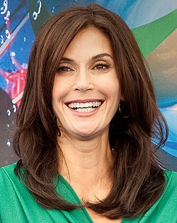

Вони можуть прибрати в домі та прибрати з дороги суперницю. Вони здатні зробити смачну вечерю та грандіозний скандал. Їм постійно доводиться копирсатися у брудній білизні. Тому що вони… відчайдушні домогосподарки! На перший погляд їхнє життя здається простим і красивим. Але за фасадом ідеального передмістя – іронія, драма, кохання та зради. Цей серіал відкриває всю правду про життя сучасної жінки в непростому світі.

| Назва | Відчайдушні домогосподарки |
|---|---|
| Рік випуску | 2004–2012 |
| Жанр | Комедійна драма, детектив |
| Режисер | Марк Черрі (создатель серіалу) |
| Рейтинг IMDb | 7.6/10 |
| Фото | Ім'я |
|---|---|
|  | Тері Гетчер |
| Марсія Кросс | |
| Фелісіті Гаффман | |
| Єва Лонгорія | |
|
Ніколетт Шерідан |
🎬 Переглянути трейлер на YouTube
🌐 Український сайт для серіалу